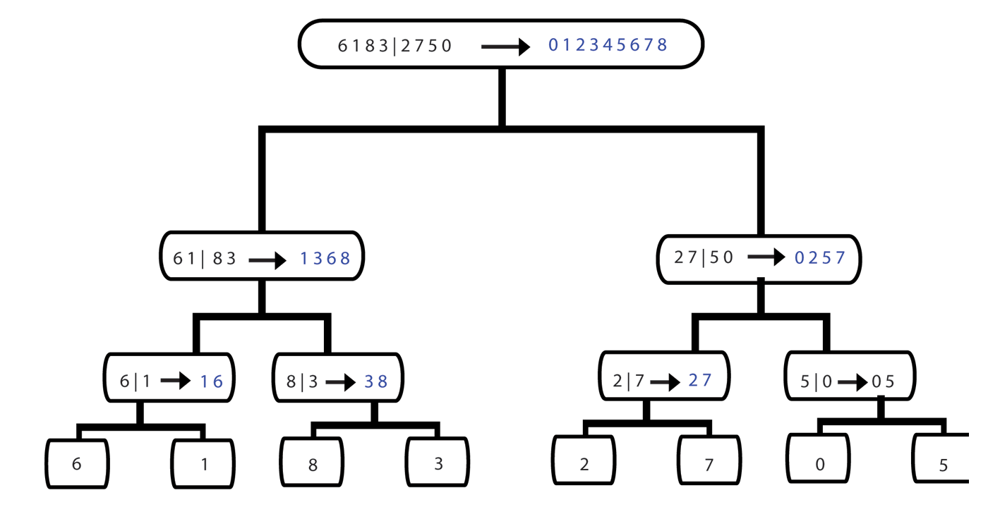

Merge Sort
Definition
Merge sort was invented by John Von Neumann in 1945. It is a comparison sorting algorithm that is easy to implement as it preserves the input order of equal elements in the sorted output. Merge sort is based on the ‘divide and conquer’ principal.
Implementation
Merge Sort works as follows:
- Divide the unsorted list into two sub-lists of about half the size.
- Divide each of the two sub-lists recursively until there is a list size of length 1, which the list itself is returned.
- Merge the two sorted sub-lists back into one sorted list.
Example
Merge Sort
Functions
Merge Sort is implemented by the following functions:
- merge();
- merge_Sort();
This function takes the sections of an array as arguments and merges them together. The two sections are copied in separate arrays, where actual merging is invoked. There are two pointers at the start of both arrays. The first elements are compared against each other and the smaller element is copied to the original array. The pointer is incremented and the process continues until one of the two arrays is finished. The remaining array’s elements are copied to the original array. The two arrays are merged and are in sorted order.
This function splits the array into two equal parts. The function is called upon each part of the array. The ‘merge’ function is then called to merge both parts of the array.
Pseudocode
function merge(array arr, lo, mid, hi) array temp left = lo right = mid + 1 while left <= mid and right <= hi if arr[left] < arr[right] temp[k] = arr[left] increment left else temp[k] = arr[right] increment right increment integer k if left <= mid while left <= mid temp[k] = arr[left] increment left increment k else if right <= hi while right <= hi temp[k] = arr[right] increment right increment k for the length of temp arr[low + integer] = temp[integer] function mergeSort(array arr, lo, hi) if low <= hi mid = (low + hi) / 2 mergeSort(first half of list) mergeSort(second half of list) merge(entire list)
Complexity
The optimal time complexity of merge sort is O(N log(N)). However, merge sort suffers from a drawback, in which the algorithm may require extra space of O(N) for the temporary second array.
Advantages of Merge Sort
Merge sort is considered a useful sorting algorithm because it performs an operation in a stable and fast format.
When sorting slow-accessed data, such as a hard disk, it does so with optimal and satisfactory output.
Developers which access data in a sequential manner use merge sort to sort data that may be stored on a linked list or other forms of data structures.
Merge sort possess many advantages over quicksort.
For example, the algorithm is more reliable at handling sequential-accessed lists.
Disadvantages of Merge Sort
Merge sort is a comparison sorting algorithm, and is therefore slower than algorithms such as quicksort, which is a non-comparison sorting algorithm. The reason is that non-comparison sorting algorithms possess the ability to sort data in linear time. However, this cautiously depends on the input data being supplied. If the input data being supplied is mostly in sorted order before sorting operations commence, then insertion sort or bubble sort would be a faster algorithm to choose.